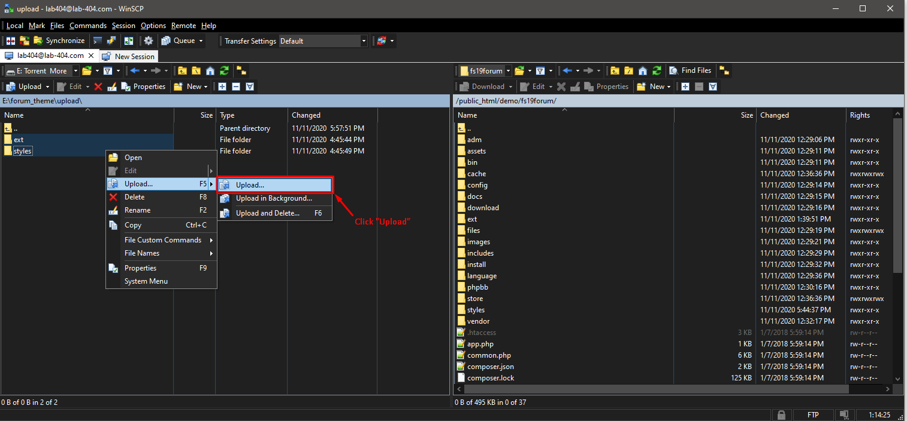
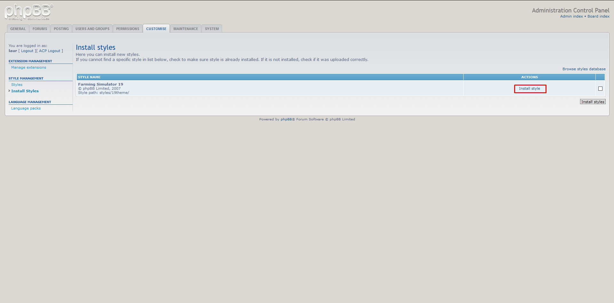
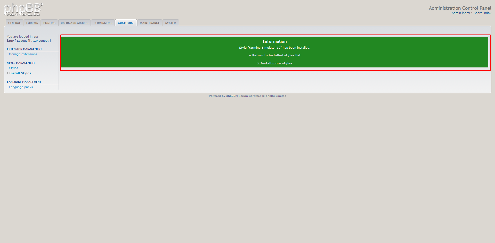
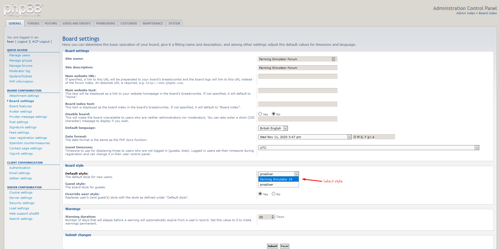
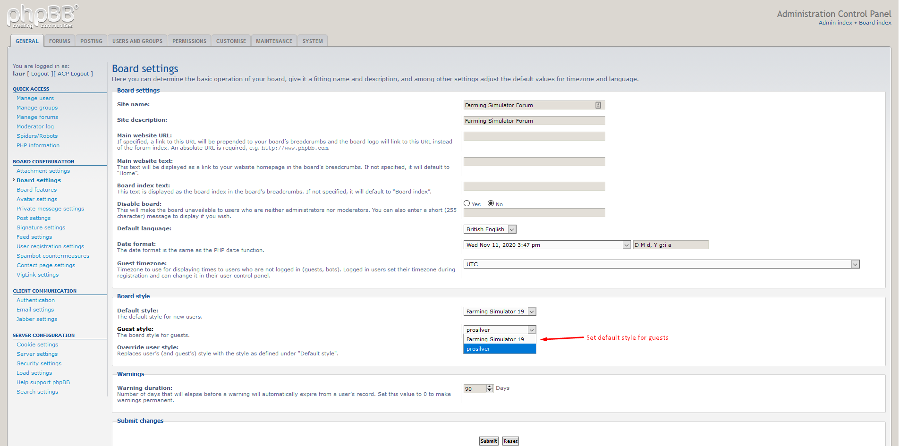
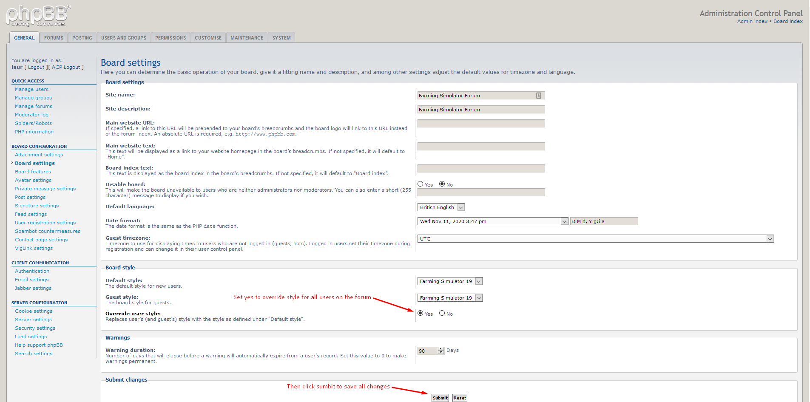
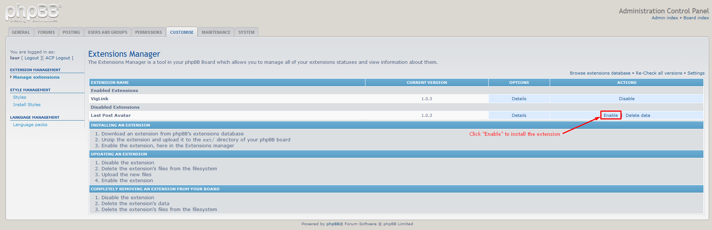
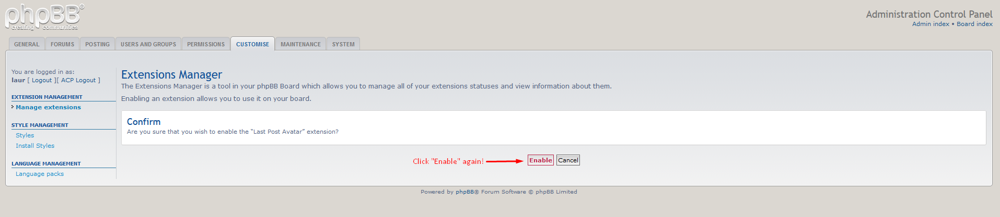
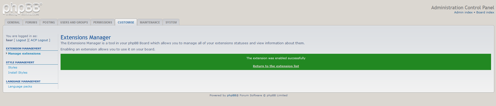
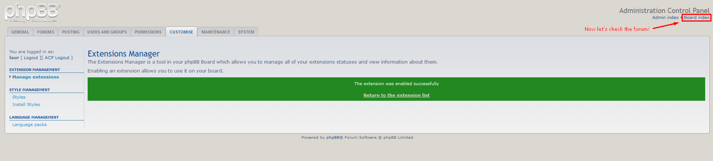

Installation!
Follow the steps below!
Upload files
Open your FTP client and connect to your website.
Upload the content from folder upload to your forum root public_html or public_html/forum as it shown in the image below.

Install theme
To install theme go to CUSTOMISE tab and then select from left side menu Install Styles then click the Install style button (as in the image below

You should see a success message if theme was installed successfully (as in the image below)

Activate style
Now click GENERAL tab and then select from the left side menu
Board settings and then set Default style to
Farming Simulator 19 same for Guest style and don't forget
to select Yes on



Enable extension Last post forum avatar
Click the CUSTOMISE tab and then slect from the left menu Manage extensions then click Enable on the extension Last Post Avatar(as in the image below).




Now let's get to step 4. Finish.